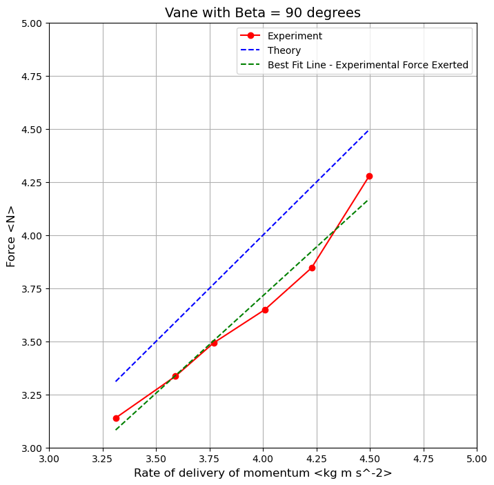
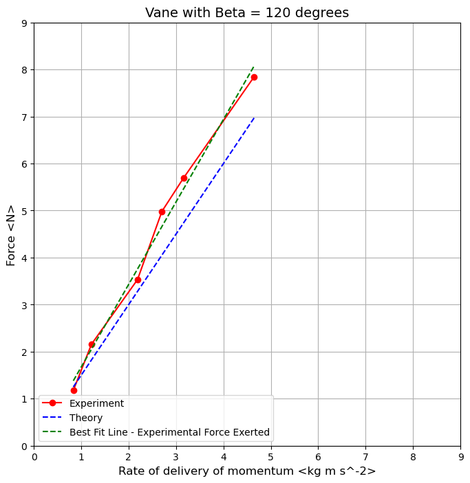

import numpy as np
from numpy import polyfit
from matplotlib import pyplot as plt
import pandas as pdMAE 3127 - Fall 2025
Laboratory: Impact of a jet Experiment
Let’s start by importing our favorite friends as always going forward in this class: numpy, matplotlib, and pandas
Before we get started with pandas, we are going to introduce a function called help() which will provide some information about functions we are working with!
#Here we ask python to tell us about the np.array function, but this works with everything!
help(np.array)Help on built-in function array in module numpy:
array(...)
array(object, dtype=None, *, copy=True, order='K', subok=False, ndmin=0,
like=None)
Create an array.
Parameters
----------
object : array_like
An array, any object exposing the array interface, an object whose
__array__ method returns an array, or any (nested) sequence.
dtype : data-type, optional
The desired data-type for the array. If not given, then the type will
be determined as the minimum type required to hold the objects in the
sequence.
copy : bool, optional
If true (default), then the object is copied. Otherwise, a copy will
only be made if __array__ returns a copy, if obj is a nested sequence,
or if a copy is needed to satisfy any of the other requirements
(`dtype`, `order`, etc.).
order : {'K', 'A', 'C', 'F'}, optional
Specify the memory layout of the array. If object is not an array, the
newly created array will be in C order (row major) unless 'F' is
specified, in which case it will be in Fortran order (column major).
If object is an array the following holds.
===== ========= ===================================================
order no copy copy=True
===== ========= ===================================================
'K' unchanged F & C order preserved, otherwise most similar order
'A' unchanged F order if input is F and not C, otherwise C order
'C' C order C order
'F' F order F order
===== ========= ===================================================
When ``copy=False`` and a copy is made for other reasons, the result is
the same as if ``copy=True``, with some exceptions for 'A', see the
Notes section. The default order is 'K'.
subok : bool, optional
If True, then sub-classes will be passed-through, otherwise
the returned array will be forced to be a base-class array (default).
ndmin : int, optional
Specifies the minimum number of dimensions that the resulting
array should have. Ones will be pre-pended to the shape as
needed to meet this requirement.
like : array_like
Reference object to allow the creation of arrays which are not
NumPy arrays. If an array-like passed in as ``like`` supports
the ``__array_function__`` protocol, the result will be defined
by it. In this case, it ensures the creation of an array object
compatible with that passed in via this argument.
.. versionadded:: 1.20.0
Returns
-------
out : ndarray
An array object satisfying the specified requirements.
See Also
--------
empty_like : Return an empty array with shape and type of input.
ones_like : Return an array of ones with shape and type of input.
zeros_like : Return an array of zeros with shape and type of input.
full_like : Return a new array with shape of input filled with value.
empty : Return a new uninitialized array.
ones : Return a new array setting values to one.
zeros : Return a new array setting values to zero.
full : Return a new array of given shape filled with value.
Notes
-----
When order is 'A' and `object` is an array in neither 'C' nor 'F' order,
and a copy is forced by a change in dtype, then the order of the result is
not necessarily 'C' as expected. This is likely a bug.
Examples
--------
>>> np.array([1, 2, 3])
array([1, 2, 3])
Upcasting:
>>> np.array([1, 2, 3.0])
array([ 1., 2., 3.])
More than one dimension:
>>> np.array([[1, 2], [3, 4]])
array([[1, 2],
[3, 4]])
Minimum dimensions 2:
>>> np.array([1, 2, 3], ndmin=2)
array([[1, 2, 3]])
Type provided:
>>> np.array([1, 2, 3], dtype=complex)
array([ 1.+0.j, 2.+0.j, 3.+0.j])
Data-type consisting of more than one element:
>>> x = np.array([(1,2),(3,4)],dtype=[('a','<i4'),('b','<i4')])
>>> x['a']
array([1, 3])
Creating an array from sub-classes:
>>> np.array(np.mat('1 2; 3 4'))
array([[1, 2],
[3, 4]])
>>> np.array(np.mat('1 2; 3 4'), subok=True)
matrix([[1, 2],
[3, 4]])
Start playing with pandas library to get all the data from the excel spreadsheet into python.
Jargon: dataframe
Pandas is a library to work with dataframe objects. Dataframes are a way to represent data in rows and columns, much like a matrix!!
A little vocab to get us started. I promise it won’t be much!
- The columns of a dataframe are called the columns
- The rows of the dataframe are called the index
See that wasn’t too bad :)
Last week we discussed importing data from a csv file into a pandas dataframe. We are going to bring that back and do a whole lot more with it this week! We have provided a SampleData_ImpactOfJet.xlsx file in this week’s content for this demonstration!
Here are the steps!
Locate place the file titled
SampleData_ImpactOfJet.xlsxin the same folder as this jupyter notebook fileCopy Path or Filenmake to Clipboard; you may have to append.xlsxto the file name.Establish a
filenamevariable in a code cell that is an empty string usingfilename = ''as show in the cell belowInside the quotes paste the path using
Ctrl+VorCmd+Von your keyboardYou should now have something like this:
filename = 'SampleData_ImpactOfJet.xlsx'Finally, use
data = pd.ExcelFile(filename)to save your file into a pandas dataframe!
Before I started writing this code for your class I was playig with files from the datasets in vega_datasets, if you are curious.
filename = 'SampleData_ImpactOfJet.xlsx'
data = pd.ExcelFile(filename)
df1 = pd.read_excel(data, 'Beta = 90 degrees')
df2 = pd.read_excel(data, 'Beta = 120 degrees')
df3 = pd.read_excel(data, 'Beta = 180 degrees')Showing Dataframes
To show dataframes, we have a couple of options! First we can use what we did last week using the display(df) function which operates similarly to print(). We can also use df.head() and df.tail() which will just show parts of the frame. The .head(n) shows the first n lines of the frame, and the .tail(m) shows the last m lines of the frame
Let’s try these out!
Dataframe Shape
An m x n matrix has m rows and n columns. A dataframe also has rows and columns! Let’s get the shape of the dataframe using df1.shape
df1.shape will return the (number_of_rows, number_of_columns)
df1.shape
# Note: Table-related to the dataframe df1 needs to be filled with your experimental data.
# It has been filled with sample data in the file.(6, 8)df2.shape
# Note: Table-related to the dataframe df2 needs to be filled with your experimental data.
# It has been filled with sample data in the file.(6, 8)df3.shape
# Note: Table-related to the dataframe df3 needs to be filled with your experimental data.
# It has been deliberately left blank in the sample data file.(6, 8)Accessing Data within Frames
Let’s start with accessing data in the dataframe, df1.
Using the df1.iloc['Row', 'Column'] function we can locate certain data.
Last week we used this for plotting. We will get to that in a second. Let’s pull out all the data starting with row-index 1 and column-index 1 in the dataframe df1.
Momentum_rate_90 = df1.iloc[:,5]Momentum_rate_90 = list(Momentum_rate_90)
# A little bit Python wizardry happened in this cell.
# The date saved in the variable, `Momemtum_rate_90` was converted into a `list` data type to avoid future pain.
# While you are expected to follow along to get to the beautiful data plot presented later,
# you can do your own research exploring various Python data types such as int, float, list, arrays, dictionaries etc.Momentum_rate_90[3.3106367316186254,
3.5900570440590207,
3.7686587369700386,
4.008707804234739,
4.226626919107985,
4.495692419023809]Experimental_force_90 = df1.iloc[:,6]Experimental_force_90 = list(Experimental_force_90)
# A little bit Python wizardry happened in this cell.
# The date saved in the variable, `Experimental_force_90` was converted into a `list` data type to avoid future pain.
# While you are expected to follow along to get to the beautiful data plot presented later,
# you can do your own research exploring various Python data types such as int, float, list, arrays, dictionaries etc.Experimental_force_90[3.1392, 3.3354, 3.49236, 3.6493200000000003, 3.84552, 4.27716]Theoretical_force_90 = df1.iloc[:,7]Theoretical_force_90 = list(Theoretical_force_90)
# A little bit Python wizardry happened in this cell.
# The date saved in the variable, `Theoretical_force_90` was converted into a `list` data type to avoid future pain.
# While you are expected to follow along to get to the beautiful data plot presented later,
# you can do your own research exploring various Python data types such as int, float, list, arrays, dictionaries etc.Theoretical_force_90[3.310636731618625,
3.5900570440590203,
3.768658736970038,
4.008707804234738,
4.226626919107984,
4.495692419023808]Matplotlib Pyplot Figures and Subplots for the dataframe, df1
Also .. First-degree polynomial fit, fancy way of saying linear-fit.
Matplotlib is a comprehensive library for creating static, animated, and interactive visualizations in Python. Matplotlib makes easy things easy and hard things possible.
Source: https://matplotlib.org
A figure is just a place for our plots to exist. A figure can have multiple subplots which are arranged like a matrix in rows and columns. Each subplot is called an axis.
In the cell that follows, we also will use np.polyfit() to np.poly1d() to create a first-degree best fit line.
Let’s play around with the subplots feature a little bit.
To create a set of axes, use the function:
fig, axs = plt.subplots(num_of_rows, number_of_columns, figsize=(width, height))
Let’s break this down a little at a time.
#set up our single subplot!
fig, ax = plt.subplots(figsize=(8,8))
#let's establish the x-axis with the variable "Momentum_rate"
#And establish our y-axis values with the following variables:
#Experimental_force
#Theoretical_force
# red dashes, blue dots and green triangles
ax.plot(Momentum_rate_90, Experimental_force_90, color='r', marker='o', label='Experiment')
ax.plot(Momentum_rate_90, Theoretical_force_90, color='b', linestyle='--', label='Theory')
#plot first-degree least-squares fit lines for Experimental Force Exerted for Table 3
C_90 = np.polyfit(Momentum_rate_90, Experimental_force_90, 1) #define coefficients for slope and y-intercept
# Get the slope and intercept of the line
slope_90 = C_90[0]
#print(slope_90)
intercept_90 = C_90[1]
#print(intercept_90)
f_linear_90 = np.poly1d(C_90) #create function for best fit line using slope and y-intercept
bestfit_line = f_linear_90(Momentum_rate_90)
#plot the best fit line for the experimental values using a dashed red line
ax.plot(Momentum_rate_90, bestfit_line, color='g', linestyle='--', label='Best Fit Line - Experimental Force Exerted')
#and lets get a little fancy an add some labeling
ax.set_xlabel('Rate of delivery of momentum <kg m s^-2>', fontsize=12)
ax.set_ylabel('Force <N>', fontsize=12)
#and maybe a title for our plot
ax.set_title('Vane with Beta = 90 degrees', fontsize=14)
#ax.axis([x1, x2, y1, y2]) limits the view we want to see
ax.axis([3, 5, 3, 5])
#ax.grid() adds a grid to the plot
ax.grid()
#ax.lengend() adds a legend (and finally a semi-colon to eliminate the default printing)
ax.legend();
Save the above plot as a png-file, for the dataframe, df1
Note that fig is the variable assigned to the plot above. Review the cell with the plotting code. The following line of code will save the above plot in the same working directory where the the jupyter notebook was saved.
fig.savefig('Bulusu_Bengisu_Swastika_Consultants1.png')Let’s now try accessing data in the dataframe, df2.
Using the df2.iloc['Row', 'Column'] function we can locate certain data.
Last week we used this for plotting. We will get to that in a second. Let’s pull out all the data starting with row-index 1 and column-index 1 in the dataframe df1.
Momentum_rate_120 = df2.iloc[:,5]Momentum_rate_120 = list(Momentum_rate_120)
# A little bit Python wizardry happened in this cell.
# The date saved in the variable, `Momemtum_rate_120` was converted into a `list` data type to avoid future pain.
# While you are expected to follow along to get to the beautiful data plot presented later,
# you can do your own research exploring various Python data types such as int, float, list, arrays, dictionaries etc.Momentum_rate_120[0.8333049878310794,
1.21612943031991,
2.1868853672915844,
2.7023232399019768,
3.1560095021719508,
4.64873811700808]Experimental_force_120 = df2.iloc[:,6]Experimental_force_120 = list(Experimental_force_120)
# A little bit Python wizardry happened in this cell.
# The date saved in the variable, `Experimental_force_120` was converted into a `list` data type to avoid future pain.
# While you are expected to follow along to get to the beautiful data plot presented later,
# you can do your own research exploring various Python data types such as int, float, list, arrays, dictionaries etc.Experimental_force_120[1.1772, 2.1582000000000003, 3.5316000000000005, 4.98348, 5.6898, 7.848]Theoretical_force_120 = df2.iloc[:,7]Theoretical_force_120 = list(Theoretical_force_120)
# A little bit Python wizardry happened in this cell.
# The date saved in the variable, `Theoretical_force_120` was converted into a `list` data type to avoid future pain.
# While you are expected to follow along to get to the beautiful data plot presented later,
# you can do your own research exploring various Python data types such as int, float, list, arrays, dictionaries etc.Theoretical_force_120[1.249957481746619,
1.8241941454798647,
3.280328050937376,
4.053484859852965,
4.734014253257925,
6.973107175512119]Matplotlib Pyplot Figures and Subplots for the dataframe, df2
Also .. First-degree polynomial fit, fancy way of saying linear-fit.
Matplotlib is a comprehensive library for creating static, animated, and interactive visualizations in Python. Matplotlib makes easy things easy and hard things possible.
Source: https://matplotlib.org
A figure is just a place for our plots to exist. A figure can have multiple subplots which are arranged like a matrix in rows and columns. Each subplot is called an axis.
In the cell that follows, we also will use np.polyfit() to np.poly1d() to create a first-degree best fit line.
Let’s play around with the subplots feature a little bit.
To create a set of axes, use the function:
fig, axs = plt.subplots(num_of_rows, number_of_columns, figsize=(width, height))
Let’s break this down a little at a time.
#set up our single subplot!
fig, ax = plt.subplots(figsize=(8,8))
#let's establish the x-axis with the variable "Momentum_rate"
#And establish our y-axis values with the following variables:
#Experimental_force
#Theoretical_force
# red dashes, blue dots and green triangles
ax.plot(Momentum_rate_120, Experimental_force_120, color='r', marker='o', label='Experiment')
ax.plot(Momentum_rate_120, Theoretical_force_120, color='b', linestyle='--', label='Theory')
#plot first-degree least-squares fit lines for Experimental Force Exerted for Table 3
C_120 = np.polyfit(Momentum_rate_120, Experimental_force_120, 1) #define coefficients for slope and y-intercept
# Get the slope and intercept of the line
slope_120 = C_120[0]
#print(slope_120)
intercept_120 = C_120[1]
#print(intercept_120)
f_linear_120 = np.poly1d(C_120) #create function for best fit line using slope and y-intercept
bestfit_line = f_linear_120(Momentum_rate_120)
#plot the best fit line for the experimental values using a dashed red line
ax.plot(Momentum_rate_120, bestfit_line, color='g', linestyle='--', label='Best Fit Line - Experimental Force Exerted')
#and lets get a little fancy an add some labeling
ax.set_xlabel('Rate of delivery of momentum <kg m s^-2>', fontsize=12)
ax.set_ylabel('Force <N>', fontsize=12)
#and maybe a title for our plot
ax.set_title('Vane with Beta = 120 degrees', fontsize=14)
#ax.axis([x1, x2, y1, y2]) limits the view we want to see
ax.axis([0, 9, 0, 9])
#ax.grid() adds a grid to the plot
ax.grid()
#ax.lengend() adds a legend (and finally a semi-colon to eliminate the default printing)
ax.legend();
Save the above plot as a png-file
Note that fig is the variable assigned to the plot above. Review the cell with the plotting code. The following line of code will save the above plot in the same working directory where the the jupyter notebook was saved.
fig.savefig('Bulusu_Bengisu_Swastika_Consultants2.png')Now that you learned how to run a python code that plots your experimental data
You should have three tables of data gathered.
You can start by adding data in the dataframe df3 by modified the file, SampleData_ImpactOfJet.xlsx.
You should
- Use the excel formatted template to input your own data gathered in the lab
- Try adapting this Python code to plot your own data from lab.
- Make sure you include the excel spreadsheet file with you experimental data in the same folder as this code.
Ultimately, you need to submit the following deliverables on Blackboard
- Excel file with your experimental data
- A working code that works with your experimental data and
- Three plots in png-format each showing the data from the geometries used in the experiment.
- Scanned copy of the data written up in the handout provided to you in the lab.
![Created in deepnote.com]() Created in
Created in